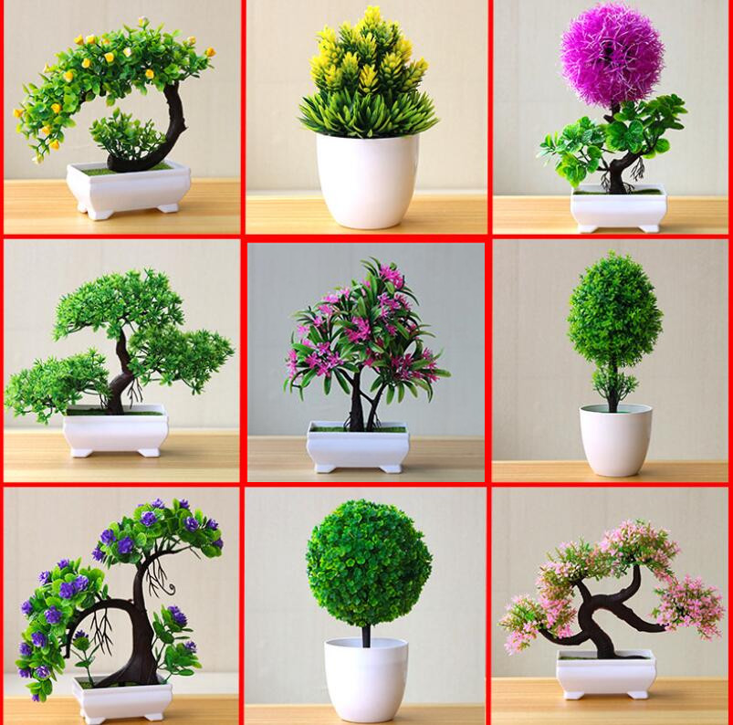

BONSÁIS
La creación de bonsáis se originó en China, y fue trasladada a Japón hace 800 años. En principio, era parte del culto de los monjes taoístas, quienes consideraban esta práctica como un símbolo de eternidad. Estos pequeños árboles representaban puentes entre la divinidad y la humanidad; un paso entre el cielo y la tierra.
Los monjes, los colocaban en vasijas a lo largo de los templos, y en las escaleras, como objetos de adoración. Además, el tener y cuidar bonsáis, estaba ligado al hecho de pertenecer a la nobleza y a la alta sociedad.
Se creía que quienes lo hacían, tenían asegurada la eternidad. Como los bonsáis buscaban replicar las características de un árbol desarrollado de forma natural, quienes se dedicaban a su siembra empleaban solo aquellas especies que crecían en las montañas, y que debido a los factores climáticos, presentaban formas diferentes y especiales.